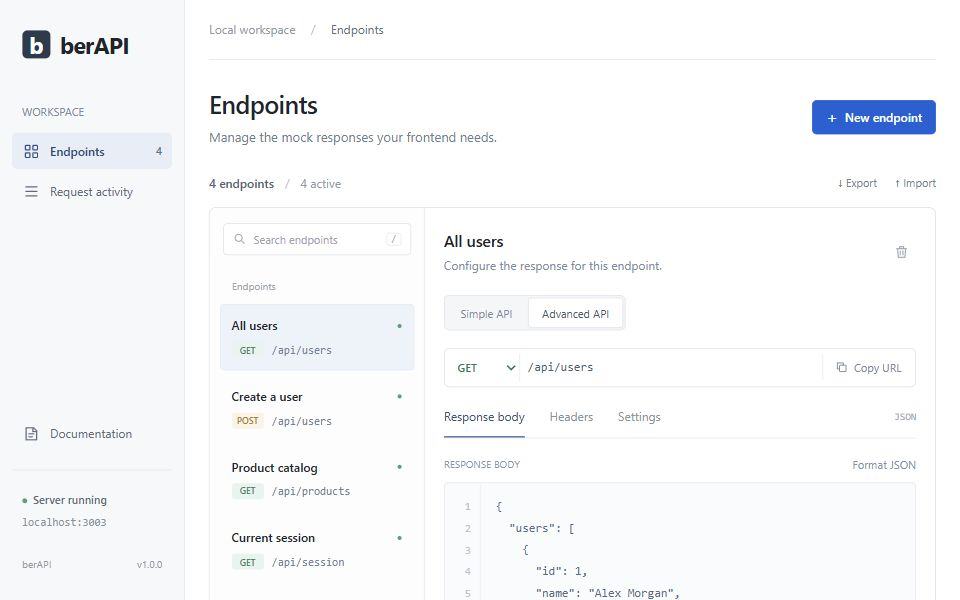

Developer tool · Personal project
berAPI
A local mock API workspace that lets frontend developers build and test interfaces before a backend is ready.

The problem
Frontend work needs more than a successful API response. Loading states, slow connections, failed requests, and rate limits all need a way to be tested.
What it does
- Create endpoints with custom JSON, text, or HTML responses, headers, and status codes.
- Simulate latency, random failures, and per-endpoint rate limits.
- Inspect incoming requests and import or export a local workspace.
Keep the workspace local
The Node.js server binds to 127.0.0.1 and saves endpoints in a local JSON file. It runs without installing dependencies, while CORS support lets a separately running frontend call the mock endpoints.
Scope & limitations
Responses are static: request bodies do not change stored results, and write requests do not mutate other endpoints. The public site contains documentation; the mock server runs locally.